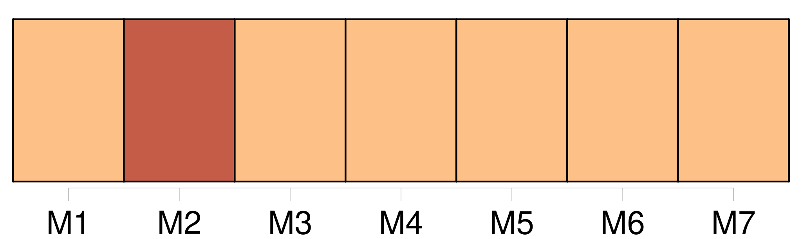
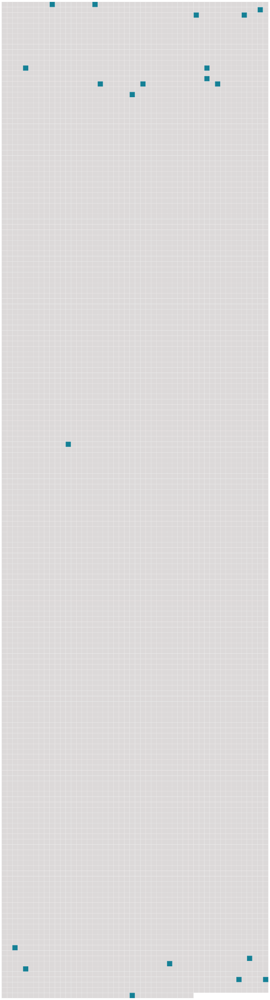

Longueur nb maillons : 20 mentions |
  |
Le lendemain Sérapion me vint prendre ; deux mules [nous] attendaient à la porte, chargées de [nos] maigres valises ; il monta l’ une, et moi l’ autre tant bien que mal. [1 phrases] Mon regard tâchait de plonger derrière les stores et à travers les rideaux de tous les palais devant lesquels [nous] passions. [1 phrases] Enfin [nous] arrivâmes à la porte de la ville et [nous] commençâmes à gravir la colline. [15 phrases] Au bout de trois journées de route par des campagnes assez tristes, [nous] vîmes poindre à travers les arbres le coq du clocher de l’ église que je devais desservir ; et, après avoir suivi quelques rues tortueuses bordées de chaumières et de courtils, [nous] nous trouvâmes devant la façade, qui n’ était pas d’ une grande magnificence. [2 phrases] — [Nous] entrâmes ; quelques poules picotaient sur la terre de rares grains d’ avoine ; accoutumées apparemment à l’ habit noir des ecclésiastiques, elles ne s’ effarouchèrent point de [notre] présence et se dérangèrent à peine pour [nous] laisser passer.
Un aboi éraillé et enroué se fit entendre, et [nous] vîmes accourir un vieux chien. [3 phrases] Une femme assez âgée, et qui avait été la gouvernante de l’ ancien curé, vint aussi à [notre] rencontre et, après m’ avoir fait entrer dans une salle basse, me demanda si mon intention était de la garder. [111 phrases] Dans quel siècle vivons [-nous] , bon Dieu!! [183 phrases] Je sais où Clarimonde a été enterrée ; il faut que [nous] la déterrions et que vous voyiez dans quel état pitoyable est l’ objet de votre amour ; vous ne serez plus tenté de perdre votre âme pour un cadavre immonde dévoré des vers et près de tomber en poudre ; cela vous fera assurément rentrer en vous -même. [1 phrases] L’ abbé Sérapion se munit d’ une pioche, d’ un levier et d’ une lanterne, et à minuit [nous] nous dirigeâmes vers le cimetière de XXX, dont il connaissait parfaitement le gisement et la disposition.
Après avoir porté la lumière de la lanterne sourde sur les inscriptions de plusieurs tombeaux, [nous] arrivâmes enfin à une pierre à moitié cachée par les grandes herbes et dévorée de mousses et de plantes parasites, où [nous] déchiffrâmes ce commencement d’ inscription : [10 phrases] C’ était un spectacle étrange, et qui [nous] eût vus du dehors [nous] eût plutôt pris pour des profanateurs et des voleurs de linceuls, que pour des prêtres de Dieu. [1 phrases] Je me sentais perler sur les membres une sueur glaciale, et mes cheveux se redressaient douloureusement sur ma tête ; je regardais au fond de moi -même l’ action du sévère Sérapion comme un abominable sacrilège, et j’ aurais voulu que du flanc des sombres nuages qui roulaient pesamment au-dessus de [nous] sortît un triangle de feu qui le réduisît en poudre. |
 |
La ressource peut être téléchargée sur la page Ortolang
Si vous avez des questions ou vous voyez des erreurs, merci d'envoyer un mail à silvia.federzoni89@gmail.com
Site développé par S. Federzoni (contact)